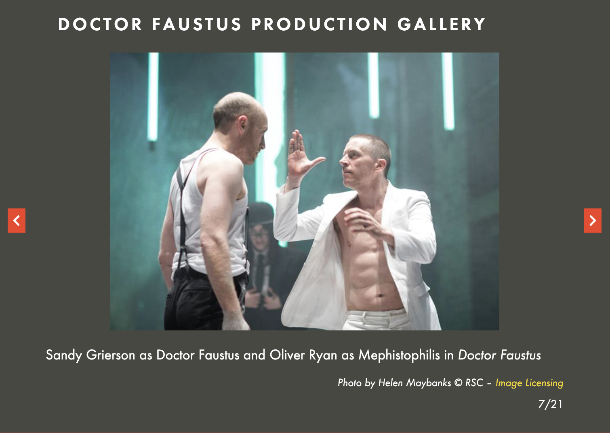

Introduction
Doctor Faustus and Power: A Modern Production History Timeline - by Alyssa Barrack
My affectionately long-winded working title for this project was "A modern production history of The Tragical History of Doctor Faustus: exploring power dynamics in different spectacle choices in a selected production history of Marlowe's Doctor Faustus since 2010." That was a bit much, so I shortened it to the above, but the previous title stands as a description of the goals of the project.
This project acts as a modern production history of Christopher Marlowe’s The Tragical History of Doctor Faustus, considering 5 modern productions that use different theatrical technologies to explore various depictions of power relations present in the script and in both traditional and modern interpretations.
I use script analysis and data assisted analysis as a starting point before delving into the 5 modern productions, and support production analysis as well with scholarship on Faustus in production, literary, and social sciences. I also created interactive visualizations for each production to highlight their relation to the analysis and power theme focus of this project. This project is an effort in archival investigation, creative computation, and reading a theme across a production history. I hope for dramaturgical labor applications in my future work of skills developed and practiced here.
Contextualizing Statement
In the field of dramaturgy, it is pretty common to start any production process of an established play by creating a particular research document called a Production History. Looking at past productions of the work to be created anew allows us to be in conversation with the ideas of others’ on a given piece, to avoid copying but allow inspiration to be taken from visual aspects, and to more richly explore thematic opportunities in the text based on the work of our colleagues in history. I think of a Production History as something like a Literature Review, as a functional document (or presentation, or project, or however it is disseminated depending on the needs of a production) that shows our networked connections with the rest of the theatrical world and lets us situate ourselves contextually within that world for the duration of our production.
I love a Production History, as a professional dramaturg. They are, however, historically a bit difficult to compile. It is hard to find relevant productions with a large amount of researchable data available for compiling, since production work is so ephemeral and intentionally time-based. Documentation generally comes from academic work (if you’re lucky), news articles and reviews about a production (with photos, again, if you’re lucky), and for modern productions, information from the company website about past productions. This is indeed where the production history data is sourced from for this project. There is limited information available, which, while frustrating as a researcher, is sometimes great as a creative and design team - you can’t repeat ideas intentionally if you can’t actually see what anyone else did! This project helped me find a new-to-me application of ChatGPT (and presumably, your LLM of choice) in its ability to take direction and compile information it found on the internet.
I used it here as a production history research start - I prompted very narrowly and specifically for it to “Give me 20 productions of Marlowe’s The Tragical History of Doctor Faustus since 1950 that have lots of available production media, news articles/reviews, and other coverage as a research starting point. ONLY show me well-documented productions to look into, please”. This prompt required some result weeding, but was an incredibly useful starting point in a research endeavor that would otherwise be HUGE. The first noted productions of this play were sometime around the early to mid 1590’s, when the Admiral’s Men, a pretty famous Elizabethan/Jacobean company had the play in their repertory. That would be a whole lot of production history to find and then weed through manually! Especially when seeking modern productions that specifically highlight themes of power and technology in Faustus.
[As a further disclosure of tools-use here, ChatGPT was used as a coding and debugging assistant in the following ways throughout the project: python script to clean the original document, downloaded from Project Gutenberg, and tokenize it; p5.js visualizations to debug and get through some tricky snippets; website to clean up html and css and assist with iframes embedding issues in the timeline structure. Voyant was used for computer-assisted data analysis of the tokenized and cleaned script. These digital tools open up so many possibilities for more robustly and interestingly showcasing the visual power of representing artistic work academically, and I am please to have them to assist in building and refining my skills.]
This play has a couple of historical written versions, and there is much debate about which should be the “official” one - see Simon 2016, Boyd 1987, Scott 2020 to start. For this project, I’m using the 1604 Quarto version or the A-Text, not because I am making a claim to its superiority but simply because it is the version I chose for this project. It is many hundred lines shorter, and is the version I am currently more familiar with, adding a personal motivation to the project. I am seeking depictions of power and surveillance in iterations of the play over the years, a production history project with an eye towards particular views of technology and the motivation of Dr Faustus in his quest for knowledge. This might yield results that support a reading of the play as an example of surveillance drama, or may instead show representations more aligned with its magical/demonic beginnings. I argue that there is space in the magic interpretations even to explore ideas of power and society, and so any conclusions are welcome conclusions.
In addition to observing a production history, I have done script analysis and machine-assisted distant reading analysis on the play to provide a starting point for my “production perspective”. I work with the original text as described above, as well as scholarship on Faustus in production , literary, and social science studies. I found a lot of connection to our course materials and the way that they depict technology and society/culture as mutually constructed. Faustus is in many ways an exploration of the danger of self-perceived genius – like that of the in-group electricians in Headrick and Marvin – and about the history of knowledge as power that we might read across our texts (particularly for me Oldenziel’s study of the language of technology and Steele’s consideration of invisibilizing certain technologies; all of our texts in some way handle the invisibilization of certain types of knowledge for cultural narrative weaving purposes, whether by doing the erasing or by calling out the neglect).
My work on this project is aligned with traditional dramaturgical techniques as well as a new form of technologically assisted dramaturgy I have been playing with, a digital humanities approach to dramaturgical work. I believe that all members of a production should learn to think dramaturgically, ideally with the support of a production dramaturg to guide them in the learning process, and the addition of digital humanities research methods to the process could be extremely valuable, especially in future experiments planned by this author in digital interactive theatrical performance work. Script analysis and data analysis will show up to enrich the selections chosen for the production history timeline, and to support their exploration of particular themes and technology use.
I somewhat unexpectedly and repeatedly considered Marshall McLuhan’s concept of Medium as Message as I worked on this project - the idea that the technology used in these productions could so readily carry forth themes from the play in substantially different ways. Consider, as you see in the timeline, the difference in Faustus through a lens of celebrity culture (2013 West Yorkshire/Citizens Theatre) versus through one of internet forums (2021 The Rude Mechanicals), versus through an intimate and candlelit sort of claustrophobic power-exploration (2018 Shakespeare’s Globe). The technological choices in each of these productions of the same source material drastically change the messages an audience can come out of it with, ranging in these examples from a cultural indictment over chasing fame and celebrity, a sad exploration of isolation and modern technology, or a consideration of power dynamics between humans (or, human and devil). While they all speak to the show’s themes of the consequences of lust for power and knowledge, they say different things about the nature of humanity and very specifically about the actual real world we live in and the conditions of the media we consume.
Many of the works I engaged with during this project investigate Faustus’s cultural relevance and longevity, considering why we keep coming back to the play and adapting it to our current cultural and technological moment. This project is in direct conversation with those questions - what keeps this play relevant to every new age of audience, and to all different types of audiences (not reserved to traditionalists, or experimentalists, etc.)? Mark James Richard Scott [note: this is one person with four first names!] presents the play as a way for Reformation-traumatized audiences to publicly work through their collective religious trauma and fear together, indicating the power of repetition and exposure to frank representations of reprobation allow repeated performances to be repeatedly attended (Scott, 22). Debra Childers Boyd also offers ideas about the robust production history, offering a taxonomy for types of reproduction and the mutual construction of stage productions “dominant patterns of interpretation which coincide with several areas of literary criticism” (Boyd, 12). Ed Simon for The Paris Review celebrates its 400 hundred year anniversary in print (for the B-text) by conceptualizing it as “one of our first modern plays” and compares it to modern problems, considering “what could be a more Faustian bargain than ours, in which we gain immense technological power under the perennial threat of complete ecological collapse?.”
Philip Breen probably best sums up the point of this particular project and its view on technical interpretations of the Faustian bargain: “As Marlowe understood, the best place to stage hell is in the imagination of the audience. They already have a fair idea of what it looks like anyway.” We keep coming back to questions of power in the pursuit of knowledge because, as we have read over the course of this semester, we keep pursuing knowledge. Douglas Schuler writes that Faustus “provides a particularly insightful lens for examining humankind’s status, notably our devotion to knowledge and technology, and the possible consequences of that seemingly unquestionable devotion” (Schuler, 258).
Even in the most advanced technical time period so far, right now, we (broad) are stuck seeking further boundaries of technical achievement. Even if there are other means of accomplishing tasks efficiently. Even if the technology is developed to the detriment of particular people, or indeed of all people. I am not a luddite, but the human capacity for eternal hunger for more makes interpreting a Faustian power bargain exceedingly easier as time extends. For me, this play based around Calvinist Christian religion (but written by an alleged atheist, homosexual, and spy) is not about religion at all. It is about internal and societal moral compasses, where Faustus the character represents a trend of human insatiability and the consequences of not knowing how and when to be satisfied.
Computational Analysis
In this project I was seeking different technical options for depicting naunced themes of power and its consequences and draws in Doctor Faustus. When reading the play, the themes of power, surveillance, and self-surveillance are so clear to me. Analysis often focuses on religious and faith-related interpretations of the play - this makes sense not only due to its contents but also to the reputation of it's author. Marlowe was a rumored atheist, and the religio-politics of the time were complicated. I, however am more interested in the rumors of his work as a spy for the crown, and all of the tangled concepts about power relations and observation (voyeurship and the being watched of it all) that I pull out of it. This especially interests me in relation to our current state of highly technical media and computer based surveillance.
This project started with a re-reading of the familiar script and a computer assisted distant reading analysis of the Project Gutenberg 1604 Quarto version of the script. After preparing the script for analysis, I uploaded it into Voyant. This process required 2 additional cleanings as Voyant revealed mistakes (the inclusion of "ll" as a unique word token, for example). Resulting data analysis visualizations from Voyant appear below. Keywords and data visualizations, including the collocates and topic modeling, were greatly helpful in further visualization processes while conceptualizing interactive visualization installations for each of the 5 productions, and some of the visualizations themselves will show up in modified form later in the timeline.
2010 Royal Exchange Theatre, Manchester
Themes:
Spectacle as Control; Observation and Surveillance; Manipulation
Technical/Medium Choices:
- Spectacle as Control: Overhwelm the audience with spectacle and magic tricks; use of huge puppets, physicality and dance, immersive visuals, and comedy/"silliness, crude humour, and sublimity" (Brennan) to confuse both Faustus and the audience.
- Observation and Surveillance: Uses an in-the-round setup with some seating from a higher vantage for a "God's-eye-view" (Kirwan) suitable for judgement. Faustus looks and is looked at.
- Manipulation: Devils' magic tricks as manipulation and distraction; employed a magician/illusionist on set.
Notes on Inclusion:
This production explored themes of spectacle and distraction and their effect on power dynamics in Faustus's pursuit of knowledge (which, in his estimation, equates to power). The use of technical and comedic overload helped to obfuscate where Faustus's magic and the devils' manipulation began and ended, following a more classical way of depicting the play's themes in early modern dramatic tradition.
- "In plays such as Doctor Faustus, conjuring models a performative speech act that threatens to blur the distinction between theatre and magic" (Sofer, 2).
- Early productions of Faustus "relie[d] heavily on the use of gunpowder: the devils rarely appeared without a corresponding burst of fireworks. By the end of the performance, then, the audience would have been almost suffocated by the smell of sulpher...Participating in Faustus's damnation via their devilish looking, spectators also got a taste of damnation themselves, enveloped by the smell of hell..." (Scott, 20).
- "When Mephistopheles announces from the stage that 'this is hell,' there lies, for an early modern audience at least, a terrifically terrifying possibility that might just be true" (Edwards).
Media
2010 Visualization
2013 Production
2013 West Yorkshire Players/Citizens Theatre
Themes:
Capitalism as Self-surveillance; Moral Decay of Fame; Celebrity Culture
Technical/Medium Choices:
- Capitalism as self-surveillance and the moral decay of fame: Faust makes his pact to become a Vegas illusionist, seeking money and fame. He offers his soul, his mind, and a lifetime of labor in this pursuit of fame and money.
- Celebrity culture: Costumes are modern dress. The play used multimedia and "a team of illusionsits" (Hickling) to create the modern glitzy facade of Vegas celebrity. We may notice a pattern here of hiring magicians to support to stage magic spectacle...
Notes on Inclusion:
The diabolic pact in this production is cemented in corporate/capital greed and media manipulation tactics. This production emphasizes a trend in productions towards "popular entertainment" since the publishing of the B-text in 1616, though scholars arrgue about the legitimacy of claims that the A-text is a straightforward morality play either (it's not, in my opinion - it's also very darkly comedic). This version of Faustus can't hide behind the idea of an ostensibly "pure" pursuit of knowledge, and in this way this production makes plain the actual motivations of nearly every Faustus - personal gain over all else, the chase of the unattainable, and the decay that happens when anything and everything is becomed apparently attainable
- Quoting director Dominic Hill: "It's the story of a man who is granted unlimited power and pisses it against the wall. Faustus is initially full of grand schemees to cure disease and control Europe. But what he actually becomes is the second-rate entertainer, traveling from court to court performing tricks for the rich and famous" (Hickling).
- Mephistopheles in this production "becomes quite mesmerizing and unexpectedly moving as a woman who knows that we are all mere players in the spectacle, poor foolish actors in a show that has been running since humanity first walked the Earth and upon which the curtain never falls" (Gardner).
- "The new sequences see Faustus elevated to celebrity in an X-Factor style transformation. Much of the action is set backstage as his career arc as a Vegas strip illusionist...rises and falls towards the inevitable final encounter with the grim reaper" (Brown).
Media
2013 Visualization
2016 Production
2016 Royal Shakespeare Company
Themes:
Duality of the Self; Performance of Identity; Observation and Surveillance
Technical/Medium Choices:
- Duality of the self and performance of identity: The actors playing Faustus and Mephistopheles switch roles each performance, decided by a match stick before the show starts. This paints the characters as two sides of the same person, interchangeable.
- Observation and Surveillance: This production considers internal surveillance through the role-swapping and through the intimacy of the staging. Minimalist production aesthetic elements aid in focus on the themes.
Notes on Inclusion:
This production depicts the struggle between Faustus and his main devil Mephistopheles as an internal struggle for power and self-control. The convention of switching parts each night without determing the roles ahead of time - "each night, the decision...was made live on stage. Both actors entered, lit a match, and watched it burn. Whoever's match went out first 'lost' and played the damned doctor" (RSC) - lends to a reading of the play wherein Faustus is experiencing a hell of the self, an overwhelming moral dilemma and struggle agains the internal good and evil (represented by Mephistopheles). The minimalist aesthetic choices in the staging allowed the production to highlight the actors' interactions over the spectacle-driven production of stage magic. This leans away from traditional stagings to help audiences consider themes of identity and self-awareness in a more heavy and isolated way.
- "Maria [Aberg, director] made this decision because she was interested in Faustus and Mephistophilis as two sides of the same personality. Striking a match at the start of the play 'makes visible the moment where Faustus splits into two'" (RSC Educational Materials, 7).
Media
2016 Visualization
2018 Production
2018 Shakespeare's Globe
Themes:
Power and Intimacy; Manipulation; Observation and Surveillance
Technical/Medium Choices:
- Power and Intimacy: Candle-lit produciton tightens the already intimate space and really lets the audience focus entirely on the interpersonal dynamics between the characters.
- Manipulation: Faustus and Mephistopheles spend significant time alone, talking. In this intimate and stripped back production,a udiences could note the manipulation without the intrusion of excessive spectacle. The manipulation of the devils is the only required distraction for the story to happen to both Faustus and the audience.
- Observation and Surveillance: The small space, of course, contributes here, but the use of handheld candle light to both light and obfuscate faces, making robust use of shadow, created a feeling of curated surveillance and observational allowance. The audience is only allowed glimpses at some events and emotions, and does not always get a full picture or explanation.
Notes on Inclusion:
This candle-lit production in the small venue space of Shakespeare's Globe Sam Wanamaker Playhouse makes use of shadows and intimate space to enhance a feeling of tightness around the pressure of surveillance depicted in the play. Gender bent casting (both Mephistopheles and Faustus are played by women in this production) disrupts the classical power dynamics at play in the script, while focus is not dramaturgically centered on gender to free the actors from restricting the show thematically based exclusively on the casting.
- "[Mephistopheles] constantly distracts Faustus whenever she begins to think about turning to God and repenting, expertly keeping her under control while all the time convincing Faustus that she is doing her bidding" (Jones).
- "Mephistopheles was never, ever on Faustus's side, her intentions explicit from the start...while [she] was obedient, this was always in her own interests...there was never camraderie between the two, just Mephistopheles biding her time until time ran out" (Kirwan).
- "Faustus and the audience are distracted and seduced at every turn. When the final reckoning comes, none of us see it coming. That great cackle catches in Faustus's throat as she glimpses hell for the first time and the darkness, finally, touches us all" (Gillinson).
Media

2018 Visualization
2021 Production
2021 The Rude Mechanicals
Themes:
Digital Surveillance; Data Control; Misinformation; Digital as a Metaphor for Knowledge and Power
Technical/Medium Choices:
- An online zoom-structured production setting allowed for digital play in a digital space. The show itself is set online, as a websurfing production. Internet forum as a backdrop for the show, and multimedia in the production space, contributed to themes of digital surveillance.
Notes on Inclusion:
This production's setting of Doctor Faustus's bargain story in and across various internet forums allow for multimedia staging and a heavy focus on modern applciations of this myth, particularly to a digital technology age. This version deals with dangerous knowledge shared and mis-shared in online spaces, and offers Faustus as a metaphor to deal with the spread of misinformation and other algorithmically based fears of contemporary society like influence and the proliferation of digital echo chambers.
- "The Faust myth...provides a particularly insightful lens for examining humankind's status, notably our devotion to knowledge and technology and the possible consequences of that seemingly unquestionable devotion" (Schuler, 258).
- "The idea of 'dangerous knowledge' is in itself dangerous. Acknowledging its existence is like an alcoholic acknowledging that he or she is an alcoholic; the confessor is thereby expected to head down a certain hard road, usually one that can't be tempered with drink" (Schuler, 259).
- "...Faustus connects with some dangerous minds online [in this production] and is dragged into a world of conspiracy, magic, and evil...on a backdrop of reddit, Qanon, and internet indoctrination, this production explores what it means to access the truth and to confront reality..." (The Rude Mechanicals, Production Website).
Media

2021 Visualization
Concluding Thoughts
Thank you so much for reading and interacting with this project. It is so important to preserve and curate production histories like this to ensure we are in true conversation with the artists and scholars that shape our views on the art we make.
Please contact the author at alyssa.barrack@ucf.edu for further questions or comments.
Bibliography
...